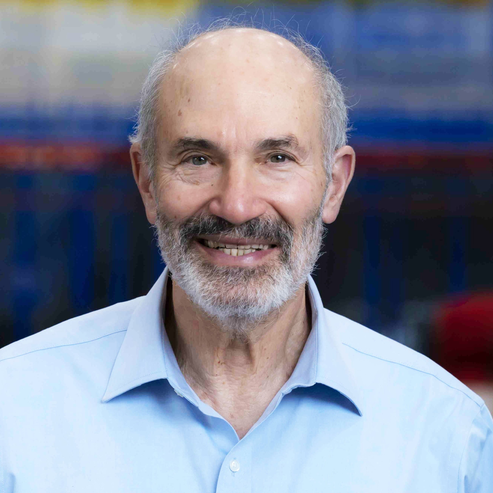
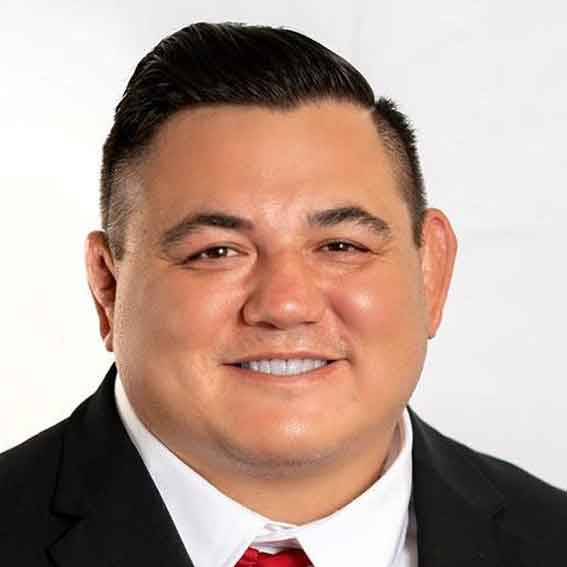
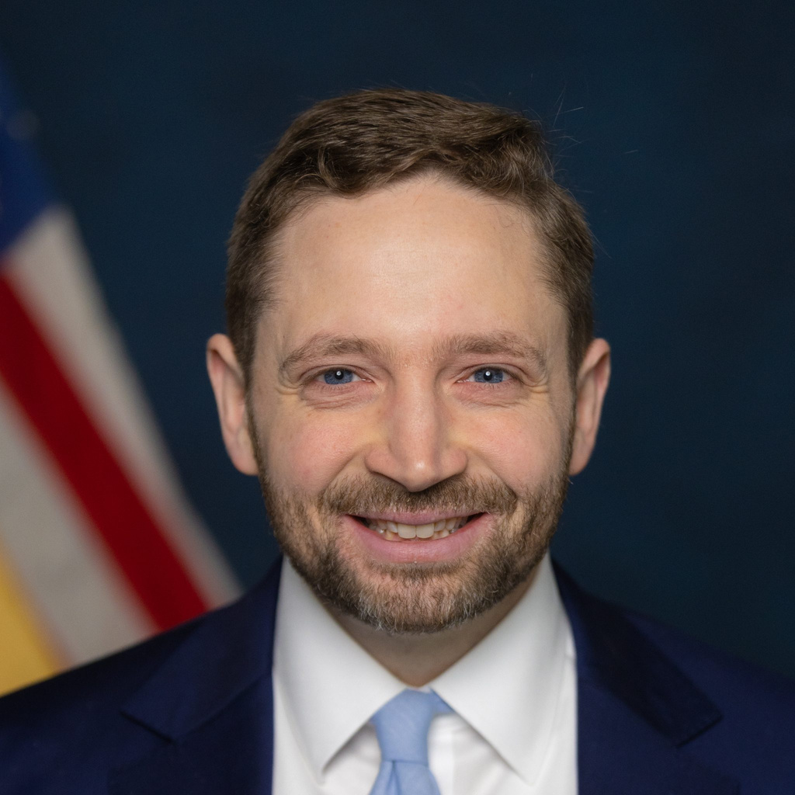

Fresh Oyez metadata and official Court dockets are saved for all 31 arguments. All have case descriptions, questions presented and advocate information; 28 have decision metadata.
31 arguments · 43 existing portraits · 14 approved images · 14 square crops · 1 unresolved
Jules L. Lobel
24-699

1024 × 1024 · square crop · approved
Source imageSource website
Source and crop details
Official Court argued entry confirms name and city; professional profile matches name, practice and location. See cached docket and profile.
Source: 3710 × 2636
Crop box: [537, 0, 3173, 2636]
Official identity evidence
24-699: Argued. For petitioner: Morgan L. Ratner, Washington, D. C.; and Curtis E. Gannon, Deputy Solicitor General, Department of Justice, Washington, D. C. (for United States, as amicus curiae.) For respondents: Jules L. Lobel, Pittsburgh, Pa.
Geoffrey M. Pipoly
25-1083
850 × 850 · square crop · approved
Source imageSource website
Source and crop details
Official Court argued entry confirms name and city; professional profile matches name, practice and location. See cached docket and profile.
Source: 2560 × 1333
Crop box: [1240, 0, 2090, 850]
Official identity evidence
25-1083: Argued. For petitioners: D. John Sauer, Solicitor General, Department of Justice, Washington, D. C. For respondents in 25-1083: Ahilan T. Arulanantham, Los Angeles, Cal. For respondents in 25-1084: Geoffrey M. Pipoly, Chicago, Ill. VIDED.
Tobias S. Loss-Eaton
25-5146
375 × 375 · square crop · approved
Source imageSource website
Source and crop details
Official docket Argued entry matches name and location. Firm profile inspected in Chrome confirms professional identity.
Source: 375 × 525
Crop box: [0, 0, 375, 375]
Official identity evidence
25-5146: Argued. For petitioner: Tobias S. Loss-Eaton, Washington, D. C. For respondent: Anthony A. Yang, Assistant to the Solicitor General, Department of Justice, Washington, D. C.
Alan A. Beck
24-1046

567 × 567 · square crop · approved
Source imageSource website
Source and crop details
Image supplied by the owner for this advocate.
Source: 567 × 850
Crop box: [0, 0, 567, 567]
Official identity evidence
24-1046: Argued. For petitioners: Alan A. Beck, San Diego, Cal.; and Sarah M. Harris, Principal Deputy Solicitor General, Department of Justice, Washington, D. C. (for United States, as amicus curiae.) For respondent: Neal K. Katyal, Washington, D. C.
Charles B. Klein
24-889
1024 × 1024 · square crop · approved
Source imageSource website
Source and crop details
Official Court argued entry confirms name and city; professional profile matches name, practice and location. See cached docket and profile.
Source: 1500 × 2000
Crop box: [200, 70, 1400, 1270]
Official identity evidence
24-889: Argued. For petitioners: Charles B. Klein, Washington, D. C.; and Malcolm L. Stewart, Deputy Solicitor General, Department of Justice, Washington, D. C. (for United States, as amicus curiae.) For respondents: Michael R. Huston, Phoenix, Ariz.
Joseph J. Perkovich
24-7351
480 × 480 · square crop · approved
Source imageSource website
Source and crop details
Official university biography identifies founding principal of Phillips Black, matching docket 24-7351.
Source: 480 × 480
Crop box: [0, 0, 480, 480]
Official identity evidence
24-7351: Argued. For petitioner: Joseph J. Perkovich, New York, N. Y. (Appointed by this Court.) For respondents: Scott G. Stewart, Solicitor General, Jackson, Miss.; and Emily M. Ferguson, Assistant to the Solicitor General, Department of Justice, Washington, D. C. (for United States, as amicus curiae.)
Emily M. Ferguson
24-7351
800 × 800 · square crop · approved
Source imageSource website
Source and crop details
Image supplied by the owner for this advocate.
Source: 800 × 800
Crop box: [0, 0, 800, 800]
Official identity evidence
24-7351: Argued. For petitioner: Joseph J. Perkovich, New York, N. Y. (Appointed by this Court.) For respondents: Scott G. Stewart, Solicitor General, Jackson, Miss.; and Emily M. Ferguson, Assistant to the Solicitor General, Department of Justice, Washington, D. C. (for United States, as amicus curiae.)
Michael Zuckerman
24-1021

1024 × 1024 · square crop · approved
Source imageSource website
Source and crop details
Official Court argued entry confirms name and city; authoritative professional profile matches name, firm/agency and location. Profile inspected in Chrome where direct request was blocked.
Source: 2048 × 2560
Crop box: [0, 0, 2048, 2048]
Official identity evidence
24-1021: Argued. For New Jersey Transit Corporation, et al.: Michael Zuckerman, Deputy Solicitor General, Trenton, N. J. For Galette and Colt, et al.: Michael B. Kimberly, Washington, D. C. VIDED.
Philip L. Ellison
25-95
686 × 686 · square crop · approved
Source imageSource website
Source and crop details
Official Court argued entry confirms name and city; professional profile matches name, practice and location. See cached docket and profile.
Source: 686 × 960
Crop box: [0, 35, 686, 721]
Official identity evidence
25-95: Argued. For petitioner: Philip L. Ellison, Hemlock, Mich. For United States, as amicus curiae: Frederick Liu, Assistant to the Solicitor General, Department of Justice, Washington, D. C. For respondent: Matthew T. Nelson, Grand Rapids, Mich.
Matthew T. Nelson
25-95
819 × 819 · square crop · approved
Source imageSource website
Source and crop details
Official Court argued entry confirms name and city; authoritative professional profile matches name, firm/agency and location. Profile inspected in Chrome where direct request was blocked.
Source: 819 × 1024
Crop box: [0, 0, 819, 819]
Official identity evidence
25-95: Argued. For petitioner: Philip L. Ellison, Hemlock, Mich. For United States, as amicus curiae: Frederick Liu, Assistant to the Solicitor General, Department of Justice, Washington, D. C. For respondent: Matthew T. Nelson, Grand Rapids, Mich.
Erin E. Murphy
24-1234
400 × 400 · square crop · approved
Source imageSource website
Source and crop details
Official Court argued entry confirms name and city; authoritative professional profile matches name, firm/agency and location. Profile inspected in Chrome where direct request was blocked.
Source: 400 × 400
Crop box: [0, 0, 400, 400]
Official identity evidence
24-1234: Argued. For petitioner: Sarah M. Harris, Principal Deputy Solicitor General, Department of Justice, Washington, D. C. For respondent: Erin E. Murphy, Alexandria, Va.
Aaron Z. Roper
24-813
Photo still unresolved.
Official docket identifies DOJ Assistant to Solicitor General. Search found no verified portrait; similarly named lawyers were rejected. DOJ seal is possible fallback, not selected.
Official identity evidence
24-813: Argued. For petitioners: Paul D. Clement, Alexandria, Va.; and Aaron Z. Roper, Assistant to the Solicitor General, Department of Justice, Washington, D. C. (for United States, as amicus curiae.) For respondents: J. Benjamin Aguiñaga, Solicitor General, Baton Rouge, La.
Richard D. Klingler
24-983
700 × 700 · square crop · approved
Source imageSource website
Source and crop details
Official docket Argued entry matches name and location. Firm profile inspected in Chrome confirms professional identity.
Source: 700 × 980
Crop box: [0, 0, 700, 700]
Official identity evidence
24-983: Argued. For petitioner: Richard D. Klingler, Washington, D. C.; and Aimee Brown, Assistant to the Solicitor General, Department of Justice, Washington, D. C. (for United States, as amicus curiae.) For respondents: Paul D. Clement, Alexandria, Va.
Michael E. Kenneally, Jr.
23-1209
560 × 560 · square crop · approved
Source imageSource website
Source and crop details
Image supplied by the owner for this advocate.
Source: 560 × 560
Crop box: [0, 0, 560, 560]
Official identity evidence
23-1209: Argued. For petitioners: Michael E. Kenneally, Jr., Washington, D. C. For respondent: John E. Roberts, Providence, R. I., and Kevin J. Barber, Assistant to the Solicitor General, Department of Justice, Washington, D. C. (for United States, as amicus curiae.)
John E. Roberts
23-1209
524 × 524 · square crop · approved
Source imageSource website
Source and crop details
Docket 23-1209 names John Edward Roberts, Proskauer, Boston; profile same email/phone 617.526.9813.
Source: 646 × 524
Crop box: [61, 0, 585, 524]
Official identity evidence
23-1209: Argued. For petitioners: Michael E. Kenneally, Jr., Washington, D. C. For respondent: John E. Roberts, Providence, R. I., and Kevin J. Barber, Assistant to the Solicitor General, Department of Justice, Washington, D. C. (for United States, as amicus curiae.)